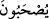

alâka ve destek görmezler.
“Yoksa kendilerini bize karşı savunacak birtakım ilâhları mı var?” Yâni onların
bizim azâbımızı üzerlerinden savacak bir takım ilahları var da onlara mı güveniyorlar?
Hayır, onların böyle ilahları yoktur. O ilâh dedikleri şeyler “kendilerine bile yardım
edecek güçte değildirler. Onlar bizden de alâka ve destek görmezler.” Bu cümle,
kendisinden önceki reddi destekleyen yeni bir cümledir. Müşriklerin inancının bâtıl
olduğunu açıklamaktadır. Yâni, onlar kendilerine bile yardıma muktedir değillerdir. Bir
kimse onlara kırmak, koparmak, kirletmek ve benzeri bir kötülük yapmak istese onu
kendilerinden uzaklaştıramazlar. Bizim tarafımızdan da yardım edilerek onlara sahip
çıkılmaz.
Râgıb şöyle demiştir: “Dostlarımıza verilen sekînet/gönül huzûru, rahat, nezâket ve
benzerleri bizim cihetimizden onlara verilmez. Şu halde onların başkalarına yardım
edecekleri nasıl vehmedilir?
İbn Abbâs (r.anhümâ): “Âyetteki “__WORD__ (alâka ve destek görmezler)” ifâdesi, “__WORD__(korunamazlar)” anlamındadır.” demiştir.